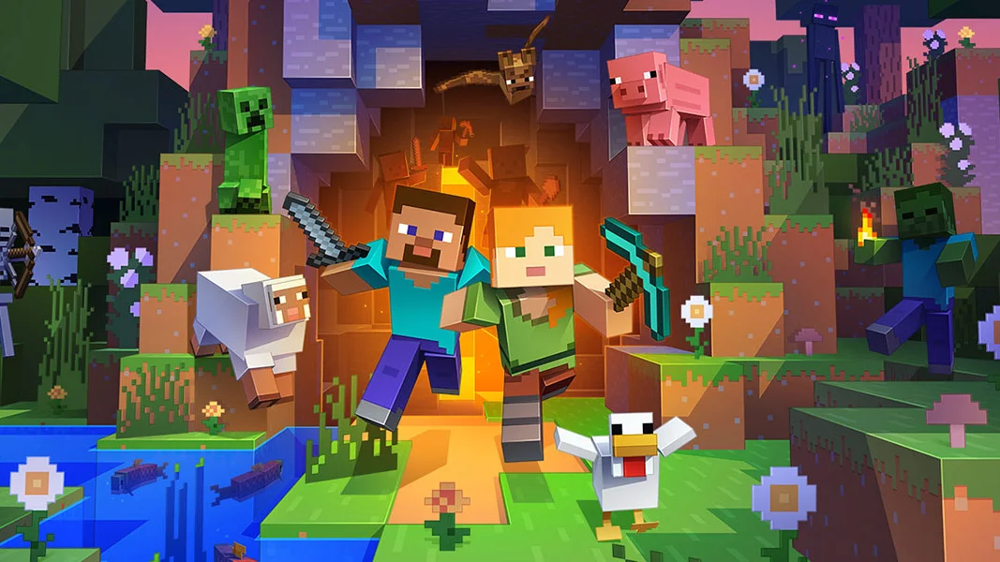

Minecraft recebe nova atualização com biomas inéditos
A Mojang anunciou novidades importantes para Minecraft, trazendo novos biomas, criaturas e melhorias na exploração.A nova atualização de Minecraft foi oficialmente apresentada pela Mojang e já está gerando grande expectativa entre os jogadores. Entre as principais novidades estão novos biomas, criaturas inéditas e melhorias no sistema de sobrevivência.
Segundo os desenvolvedores, o objetivo da atualização é tornar a exploração ainda mais dinâmica e recompensadora. Os novos ambientes prometem oferecer recursos diferentes, além de desafios inéditos para os jogadores.
Outro destaque são os novos mobs adicionados ao jogo, cada um com comportamentos próprios e novas interações dentro do mundo de Minecraft. Alguns deles poderão ajudar os jogadores, enquanto outros representarão novos perigos durante a aventura.
A comunidade recebeu a novidade de forma bastante positiva nas redes sociais. Muitos jogadores elogiaram a criatividade da Mojang e afirmaram que a atualização pode renovar completamente a experiência do game.
Ainda não há uma data definitiva para o lançamento global da atualização, mas a expectativa é que ela chegue nos próximos meses para todas as plataformas.
⬅ Voltar